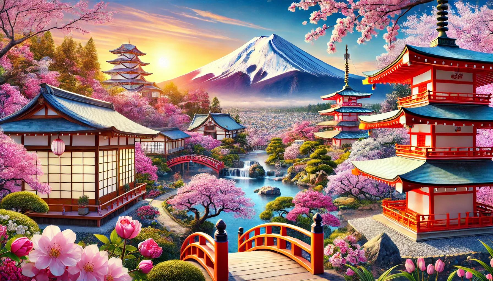

Потрясающее путешествие в Японию
Япония — это страна, сочетающая в себе древние традиции и современные технологии. Вот несколько рекомендаций для путешественников:
- Посетите Токио: Город, который никогда не спит, полон достопримечательностей, таких как Сибуя, Асакуса и Синдзюку.
- Исследуйте Киото: Исторический центр Японии с множеством храмов, садов и гейш.
- Пробуйте японскую кухню: Суши, рамен, темпура и многое другое. Обязательно посетите местные рестораны и попробуйте настоящие японские блюда.